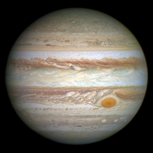

Jupiter is the fifth planet our solar system and is also the first planet that is classified as Jovian planets in the solar system. It is has a distance of 778.5 million km from the sun and being for far out, Jupiter takes nearly 12 years to orbit the whole sun! Being such a huge planet and representing the largest planet, it's no wonder why the Roman people decided to name it after their most important god, Jupiter and gave it this symbol, ♃. It's so big that Jupiter covers a whopping 1.4313×1015 km3, which is as big as 1,321 many Earths, and weighs 1.8986×1027 kg. If you were to visit Jupiter one day if it was possible, you would experience 24.79 m/s2 of gravitational force which would make your 2.3 times heavier! While you're on your way to Jupiter, you will see that Jupiter is filled with colours like brown, white, orange, and you might even come across Jupiter's famous Red Spot. While you're on Jupiter, make sure you warm and cozy, because Jupiter averages 165K or -108℃.
Wikipedia, The Free Encyclopedia. (September 1, 2016) Jupiter. Retrieved September 26, 2016, from https://en.wikipedia.org/wiki/Jupiter
Digital Image: Jupiter, ~https://upload.wikimedia.org/wikipedia/commons/thumb/2/2b/Jupiter_and_its_shrunken_Great_Red_Spot.jpg/260px-Jupiter_and_its_shrunken_Great_Red_Spot.jpg~ Retrieved September 26, 2016.
Digital Image: Atmosphere Of Jupiter, ~https://upload.wikimedia.org/wikipedia/commons/e/ec/Great_Red_Spot_From_Voyager_1.jpg~ Retrieved September 26, 2016.